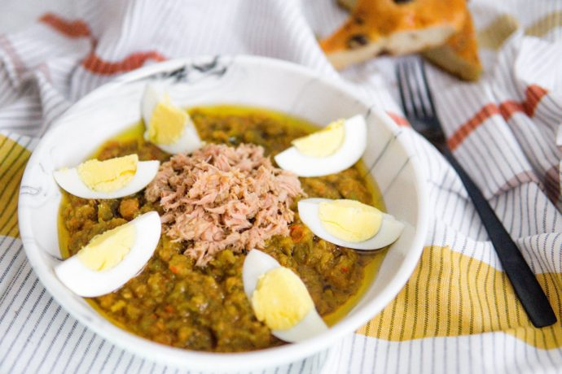

← Home page
Salade Méchouia
La salade méchouia est faite à base de légumes grillés coupés finement comme le poivron, la tomate ou l'aubergine,
servis avec des oignons, du piment, de l'ail, de la coriandre et de carvi en poudre. On l'assaisonne ensuite d'huile
d'olive, d'harissa et de jus de citron, avant d'ajouter quelques rondelles d'oeufs dur, des câpres et des miettes de
thon.

Temps de préparation : 15mn
Temps de cuisson : 25mn
Ingrédients
- 1/2 kg de piments verts (ou poivrons)
- 3 tomates moyennes
- 3 gousses d'ail
- 4 c. à soupe d'huile d'olive
- 1/2 c. à soupe de carvi
- Sel et poivre au goût
- Pour décorer : thon en conserve, olives noires, ou œufs durs
Instructions
- Sur une plaque, dans un four allumé position grill ou sur le BBQ, griller de tous côtés les piments, les tomates
et les gousses d'ail avec leurs peaux. (Je mets celles-ci dans du papier aluminium). Attention la peau des légumes
ne doit pas noircir.
- Dès retrait du four ou du BBQ, mettre les piments dans un sac en plastique et le fermer.
- Placer les tomates grillées dans une assiette et leur retirer les peaux.
- Ôter les queues, les graines et la peau aux piments.
- Mélanger les tomates, les piments et les gousses d'ail.
- Hacher le tout avec deux couteaux que vous croisez pour couper les légumes. Vous pouvez aussi passer le tout au
pilon ou au mixer mais attention à ce que le mélange ne devienne pas liquide.
- Assaisonner avec le carvi, le sel et poivre ainsi que l'huile d'olive.
- Décorer avec des olives, des œufs durs et du thon.